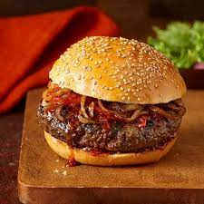

BBQ Hamburger

Sink your teeth into our mouthwatering BBQ hamburger – the ultimate comfort food with a smoky twist! Picture this:
succulent beef patties, grilled to perfection, slathered in rich BBQ sauce and crowned with ooey-gooey cheddar cheese.
With each bite, you'll savor the perfect harmony of savory meat, tangy sauce, and melty cheese.
And let's not forget the crispy bacon, juicy tomato, and zesty red onion piled high on a toasted bun.
It's BBQ bliss in every bite, whether you're firing up the grill for a backyard bash or craving a hearty meal after a long day.
Get ready to elevate your burger game and satisfy those cravings with our irresistible BBQ hamburger – it's the taste of summer all year round!
BBQ Hamburger Ingredients
- 1 pound ground beef
- 4 hamburger buns
- 4 slices of cheddar cheese
- 4 slices of cooked bacon
- 1 red onion, thinly sliced
- 1 tomato, sliced
- 4 lettuce leaves
- BBQ sauce
- Salt and pepper to taste
- Optional: pickles, jalapeños, coleslaw
Steps
- Preheat your grill to medium-high heat.
- Form the ground beef into four equal portions and shape them into hamburger patties. Season both sides of each patty with salt and pepper.
- Place the patties on the preheated grill and cook for about 4-5 minutes on each side, or until desired level of doneness is reached. During the last few minutes of cooking, brush each patty with BBQ sauce and place a slice of cheddar cheese on top of each patty to melt.
- While the patties are cooking, grill the bacon slices until crispy.
- Toast the hamburger buns on the grill for a minute or two until lightly golden.
- Spread BBQ sauce on the bottom half of each bun. Place a lettuce leaf on top of the sauce, followed by a cooked hamburger patty with melted cheese. Add a slice of tomato, a slice of cooked bacon, and a few slices of red onion. Top with the other half of the hamburger bun.
- Serve your BBQ hamburgers immediately while still warm. Enjoy the smoky, tangy flavors!